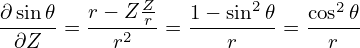
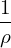
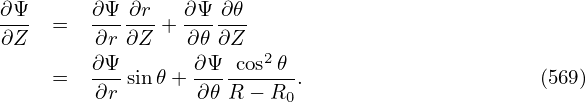
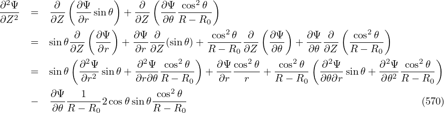
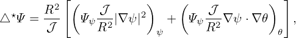
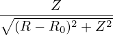
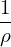
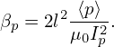
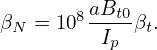

We know that the toroidal flux ψt, safety factor q, and the Ψ in the GS equation are related by the following equations:
|
| (563) |
 | (564) |
Define:
 | (565) |
(In the Toray_ga code, the radial coordinate ρ is defined as
 | (566) |
where Bt0 is a constant factor.ρ defined this way is of length dimension, which is an effective geometry radius obtained by approximating the flux surface as circular.)
I use Eq. (565) to define ρ. Then we have
|
| (567) |
|
| (568) |
 | (569) |
 | (570) |
|
| (571) |
Eq. (571) is used to transform between ψ and ρ.
| dρ = dΦ = 2πqdψ = qdψ |
| ⇒ dψ = dρ(πa2) |